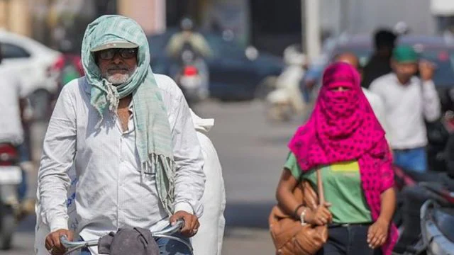

Porsche crash incident: Fresh FIR against father, grandfather of juvenile in alleged cheating
case
Day after CISF constable ‘slaps’ Kangana Ranaut, Punjab Police keep mum on action taken
T20 World Cup 2024 Stats
The T20 World Cup 2024 captivated cricket enthusiasts worldwide
with its
dynamic display of talent and thrilling matches. From the onset of the group stages to the climax of
the
knockout rounds, the tournament delivered excitement and drama in abundance.
The tournament field expanded from 16 to 20 teams, including the two hosts, the top eight teams from
the 2022 edition, the best placed two teams in the ICC Men's T20I Team Rankings not already
qualified, and eight other teams determined by regional qualifiers. Canada and Uganda qualified for
the men's T20 World Cup for the first time.
| Most Runs |
| Virat Kohli (IND) |
| Most Wickets |
| JJ Bumrah (IND) |
25+ Leading Companies Filing for Bankruptcy Protection
The news of potential bankruptcy filings by some of the world’s biggest companies has been shocking
and
concerning. From well-known retail stores to massive corporations, many of the names we’re used to
hearing
about are at risk of filing for bankruptcy.
The following will focus on familiar names in their respective industries who have filed for
bankruptcy
recently. Not all companies can be as profitable as Amazon or Walmart. Read on to find out which
companies are
on their way out and which are working towards restructuring under status.
.jpg)
American cargo carrier Western Global Airlines has sought refuge in Chapter 11 bankruptcy
protection. The
airline, faced with a staggering debt load of over $450 million, has taken this step to restructure
and regain
financial stability. The decision to restructure was prompted by declining revenues, a burdensome
debt burden,
and a lack of transparency as the key concerns. Amidst the financial turbulence, Western Global
Airlines has
found support from its creditors, including bondholders, who have pledged $77 million to assist the
airline
during its reorganization process. In the meantime, other airlines such as Delta and United continue
to
operate as usual.Citing operational challenges and COVID-related debt, Back Yard Burgers filed for
bankruptcy
for the second time. The chain tackled issues by closing stores, reducing expenses, appointing new
leadership,
and negotiating with suppliers, but it couldn’t resolve its debt.Vice Media, the once high-flying
digital.
PTwo Indian restaurants make history, find spots in World’s 100 Best Restaurants list for first
time
Notably, both Masque and Indian Accent took top spots in Asia’s 50 Best Restaurants list in 2024.

Two restaurants from India have taken coveted spots in the World’s 100 Best Restaurants list in
2024. Mumbai’s
fine dining restaurant Masque ranked at #78, becoming the Best Restaurant in India. New Delhi’s
Indian Accent
stood at #89. Both are new entrants to the list this year.
Indian Chef Gaggan Anand’s restaurant, Bangkok, continues to impress, grabbing the ninth position.
This was
their second consecutive year on the list, climbing up from their #17th spot in the 2023 list. The
restaurant
was also declared the Best Restaurant in Asia.
India’s May heatwave was warmer than previous ones,
intensified by climate
change

The severe heatwave over North and Central India in late May — when temperatures neared the 50°
Celsius mark
in Delhi and Rajasthan — was warmer than past heatwaves and strengthened by human-induced
climate change, an
analysis by a European Union-funded organisation has said.
More than 37 cities in the two regions recorded temperatures above 45° C, leading to
heat-related illness
warnings, said the analysis by ClimaMeter.
The researchers assessed past and present weather conditions such as atmospheric pressure at the
surface,
temperature and precipitation. They compared low pressure systems — associated with inclement
weather such
as
cyclonic storms — at the end of the 20th century (1979-2001) and in recent decades (2002-2023),
when the
effects of climate change have become more evident.
The scientists found that heatwaves, such as those that hit India, are now almost 1.5° C more
intense.
Temperatures in parts of Delhi such as Najafgarh, Mungeshpur and Narela were in the range of
47-49° C .
Cancer is on the rise in young Indians; our diets might be to blame
Cancer. The very word evokes fear and uncertainty. Traditionally, it’s been viewed as a disease
primarily
affecting the elderly. But a disturbing trend is emerging in India: a rise in cancer cases among
young adults.
Meta Verified for WhatsApp Business now available in India
Meta recently announced it is rolling out the Meta Verified program for WhatsApp Business users in
India,
Brazil, Indonesia and Colombia. Launched in September last year for WhatsApp Business, the
verification was
limited to Instagram and Facebook users until now.
Over 1,400 Delhi govt school students qualified NEET-UG
More than 1,400 students from Delhi government schools have qualified the NEET-UG this year,
Education
Minister Atishi said on Friday. The results for the medical entrance exam National
Eligibility-cum-Entrance
Test-Undergraduate (NEET-UG) were announced on Thursday.
© 2024 Kaustubh Mowade. All rights reserved.